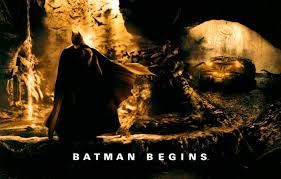

Batman Begins

Regisseur Christopher Nolan erzählt in Batman Begins, wie Bruce Wayne (Christian Bale) vom Milliardär und Playboy zum Verbrecher jagenden Batman wird. Beim Kampf gegen seine Feinde erhält er dabei Unterstützung von seinem Butler Alfred (Michael Caine), dem Technik-Experten Lucius Fox (Morgan Freeman) und dem Polizisten James Gordon (Gary Oldman). Batman Begins bringt den Realismus zurück in die Comic-Verfilmungen vom Fledermausmann und weiß mit starken Bildern und packender Action zu überzeugen.
RoboCop

Eine Firma mit dem Namen OCP (Omni Consumer Products) will aus Detroit “Delta City” machen. Dazu muß aber zuerst einmal das Verbrechen aus der Stadt entfernt werden, das hier momentan viel Macht besitzt. Dick Jones, die rechte Hand des Chefs von OCP, hat daher einen Roboter entwickelt, der die Polizei der Stadt entlasten und sogar ersetzen soll. Doch schon im ersten Test erweist sich der Cyborg als untauglich, aber Dicks Mitarbeiter Bob Morton hat eine andere Idee: Statt eines reinen Roboters will er einen RoboCop bauen, der ein menschliches Bewußtsein hat. Hierzu brauchen sie einen toten Polizisten, den sie auch schnell haben, als Alex Murphy an seinem ersten Tag im Dienst ermordet wird. Die Synthese aus Mensch und Roboter gelingt, nur hat die Sache einen Haken: RoboCop verbringt mehr Zeit damit, seine Mörder – also die von Alex – zu finden, als die Verbrecher der Stadt zu bekämpfen.